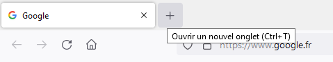
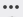
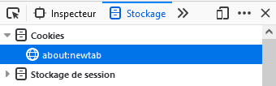
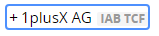

« Comment j’ai attrapé un cookie »
Quand on parcourt des pages Web, on doit très souvent accepter les cookies. Tellement souvent qu’on n’y prête souvent plus attention. Mais qu’est-ce que c’est ces cookies ?
VVisualiser la vidéo « J'ai attrapé´ des cookies » pour répondre aux questions suivantes :https://www.youtube.com/watch?v=eGTxXqm8cr8.
- Un gâteau que font les mamans le dimanche.
- Un site Web.
- Un fichier texte caché sur le disque dur.
- Un virus informatique.
- En regardant la télé.
- En surfant sur un site internet.
- En allant sur le darkweb.
- En téléchargeant des logiciels pirates.
- Se régaler, surtout quand ils sont au chocolat.
- Surfer tranquillement sur internet.
- Pirater notre ordinateur.
- ous suivre sur internet par des sociétés qui font de la pub.
- Jusqu’à ce qu’on éteigne l’ordinateur.
- Jusqu’à 1 an.
- Jusqu’à 10 ans.
- Pour toujours.
- Enregistrer la date de connexion.
- Enregistrer un numéro d’identifiant personnel.
- Retenir ce que l’on met dans un panier.
- Se souvenir de notre langue.
Un cookie est un petit fichier texte[1] que les sites web installent sur le navigateur de notre ordinateur, téléphone mobile ou tablette quand on les consulte..
[1]- Internet Explorer enregistre chaque cookie dans un fichier texte différent ;
- Mozilla Firefox et Google Chrome enregistrent les cookies dans une base de données SQLite ;
- Opera enregistre tous ses cookies dans un seul fichier et le chiffre — ce que ne font pas les trois autres.
Observer les cookies dans un navigateur
Sur Firefox
Le navigateur Firefox permet de visualiser les cookies d’un site web depuis les outils de développement.
Les outils de développement s’ouvrent dans la partie basse de la fenêtre, cliquer sur  à droite et choisir Ancrer à droite, ça sera plus lisible pour la suite.

Combien y-a-t-il de cookies lié à cet onglet ?
- des cookies strictement nécessaires sans lesquels le site ne peut correctement fonctionner ;
- des cookies de performance qui permettent au site de faire des analyses de trafic sur ses pages ;
- des cookies de fonctionnalité pour améliorer la personnalisation du site à l’utilisateur ;
- des cookies de marketing.
Sur Chrome
Chrome permet d’afficher directement les cookies depuis la barre d’adresse.
Les cookies sont associés à un site web que l’on consulte. Ils sont installés sur l'ordinateur, chaque navigateur a ses propres cookies. Certains cookies peuvent rester sur votre ordinateur pendant des années.
Il existe différents types de cookies :
- certains cookies améliorent la navigation en enregistrant des informations nous concernant pour permettre à un site web de nous identifier, de se rappeler de notre langue, de notre localisation, de nos préférences, de retrouver un panier sur un site marchand, etc. sans avoir à les renseigner à chaque fois que l’on s’y rend ;
- d’autres permettent à un site web de faire des statistiques sur son trafic ;
- enfin, les cookies publicitaires enregistrent des informations à des fins commerciales.
Observer les cookies avec LightBeam
Sur Chrome
Dans la suite de cette activité, nous utilisons une extension de Chrome appelée Thunderbeam-Lightbeam for Chrome. Elle permet de visualiser interactivement les requêtes vers des sites et les cookies qu’ils déposent.
 puis celle pour ouvrir Lightbeam (un voilier stylisé) :
.
puis celle pour ouvrir Lightbeam (un voilier stylisé) :
.Cliquer sur « I AM NOT INTERESTED” puis “NO, PLEASE DO NOT USE MY DATA” jusqu’à ce que la fenêtre soit entièrement noire (si vous avez visité des sites par erreur depuis l’installation de Lightbeam, vous pouvez cliquer sur le bouton Reset Data pour réinitialiser les requêtes).
Lors de la première connexion, il vous est demandé d'accepter les cookies mais vous allez cliquer sur .
Le premier est  , cliquer sur + devant son nom et observer les autorisations qui vont lui être données.
1plusX AG est déjà autorisé à collecter certaines de vos données personnelles « basés sur l’intérêt légitime», selon leurs termes, d’utiliser ces données. Comment compte faire 1plusXAG avec vos données ?
Pendant combien de temps 1plusX AG pourra garder des cookies sur votre navigateur pour exploiter vos données personnelles ?
- www.leboncoin.fr, un « First Party Site » montré par un rond blanc, c’est le site que vous avez consulté directement,
- Un grand nombre de sites tiers (« Third Party Sites »), montrés par des triangles blancs.
Lorsqu'un utilisateur visite un site web, des informations peuvent être transmises vers d’autres domaines qu’il n’a pas visités lui-même, appelés sites tiers.
- Aller sur le site www.lequipe.fr , cliquer sur cyclisme et lire un article sur le cyclisme.
- Aller sur le site de www.lemonde.fr , faire une recherche sur cyclisme et lire un article à ce sujet.
Trouver le nom de quelques sites tiers qui sont communs aux trois sites Web que vous avez visités.
Les cookies publicitaires sont déposés sur les navigateurs par les sites que l’on consulte et par des sites tiers liés à des agences de publicité appelées régies publicitaires.
A partir de notre navigation sur le web, ces régies publicitaires collectent des informations personnelles sur notre âge, nos gouts, nos centres d’intérêts, etc. pour les vendre à des annonceurs qui sont des entreprises qui veulent se faire connaître par des publicités ciblées en ligne
[2].
Plus les entreprises en savent sur les utilisateurs, mieux elles peuvent les cibler afin de leur vendre des produits et maximiser les profits.
[2]Le business de la publicité en ligne est connu sous le nom de Real-time Biding, ou RTB. Il consiste à vendre aux enchères les données sur un utilisateur d’un site Web à un instant donné afin de lui afficher un contenu publicitaire.
Supprimer les cookies
On l’a vu, certains cookies peuvent rester installés très longtemps dans un navigateur. Pour les faire disparaitre, il faut les supprimer (même si à l’école tout est effacé chaque fois que vous vous connectez, chez vous ce n’est sans doute pas le cas).
Sur Firefox
- Cliquer sur l'icône = en haut à droite de la fenêtre pour ouvrir le menu Paramètres.
- Choisir Vie privée et Sécurité à droite puis dans la partie Historique, cliquer sur Effacer les données.
- Dans la fenêtre qui s'affiche, cocher la case Cookies et cliquer sur Effacer les données.
Sur Chrome
- Depuis l'icône du menu Chrome . , sélectionnez "Paramètres".
- Dans la section "Confidentialité et sécurité", sélectionnez "Effacer les données de navigation".
- Puis « Effacer les données ».
Le Règlement général sur la protection des données (RGPD)
- 1988
- 1998
- 2008
- 2018
- Les petites et grandes entreprises.
- Les associations et collectivités.
- Les entreprises hors d’Europe qui utilisent des données personnelles de citoyens européens.
- Tout le monde.
- Son adresse, identité, téléphone, photo, carte de paiement.
- Un secret qui la concerne et qu’elle ne veut pas divulguer.
- Ses données de géolocalisation.
- Ses données numériques, données de santé, opinons.
- Sécuriser les données.
- Dire ce qu’on compte faire des informations.
- Dire combien de temps on conserve les données.
- ffacer les données si les personnes le demandent.
Depuis 2018, le Règlement général sur la protection des données (RGPD) encadre l’utilisation des données à caractère personnel pour quiconque collectent des données d’utilisateurs de l’Union Européenne (y compris pour les sociétés en dehors de l’UE).
Une « données personnelles » est à comprendre de façon très large : toute information se rapportant à une personne physique qui peut être identifiée, soit directement (par exemple par son nom et prénom), soit indirectement (par exemple par un identifiant, un numéro de téléphone, son identité physique, etc.).
Le RGPD nous garantit notamment :
- de demander notre autorisation avant d’utiliser des cookies qui collectent nos données personnelles ;
- de nous informer de l’utilisation qui sera faite de nos données personnelles ;
- de pouvoir accéder à nos données collectées, décider par exemple de les rectifier ou de les effacer.
En France, la CNIL (Commission Nationale de l'Informatique et des Libertés) est l'autorité chargée de veiller au respect du RGPD.
Protéger ses données personnelles en pratique
Sur votre smartphone, sur votre tablette ou votre ordinateur, vos données personnelles sont précieuses. Non seulement utilisées pour vous proposer de la publicité ciblée, elles peuvent aussi être vues par une personne utilisant votre appareil, par un inconnu qui accède à votre compte, par un hacker, etc.
Et vous, sur une échelle de 1 à 5, vous diriez que protéger vos données personnelles ...
Ne pas accepter tous les cookies sans réfléchir
Depuis le RGPD, les sites web doivent obtenir votre autorisation pour installer des cookies en affichant ces fameux messages sur lesquels il faut cliquer pour les faire disparaître. Au quotidien, faute de comprendre de quoi il s’agit ou par facilité, on clique machinalement sur le bouton Accepter pour continuer notre navigation.
Sur une échelle de 1 à 5, vous …
Il est pourtant possible (et souvent recommandé) de refuser ces cookies ou de n’autoriser que ceux indispensables au bon fonctionnement des sites Web.
Bien paramétrer son navigateur
Il est important de bien choisir les paramètres de son navigateur, si on veut bloquer tous les cookies (pas recommandé) ou bloquer tous les cookies tiers, voire accepter tous les cookies (pas recommandé).
Sur une échelle de 1 à 5, vous vérifiez les paramètres de vos navigateurs (téléphone, tablette, ordinateur) …
Ou on peut aussi utiliser des navigateurs moins intrusifs qui bloquent les cookies, par exemple Brave.
Supprimer les cookies, le cache, l’historique de votre navigateur régulièrement
Comme on l’a vu, de nombreuses informations sont conservées dans votre navigateur : historique des pages visitées, cookies, mots de passe, formulaires, fichiers téléchargés, cache… jusqu’à ce qu’on les supprime.
Sur une échelle de 1 à 5, vous supprimez vos cookies, vos historiques de navigation, vos téléchargement, etc. …
Utiliser la navigation privée
En mode de navigation privée, le navigateur n’enregistre plus certaines de vos activités : pages visités, données de formulaires, barre de recherche, mots de passes, liste de téléchargements, cookies et fichiers temporaires.
Sur une échelle de 1 à 5, vous utilisez le mode de navigation privée …
Mais même en navigation privée votre activité reste visible des sites Web que vous consultez, de l’école quand vous utilisez ses ordinateurs, ainsi que de votre fournisseur d'accès à Internet !
Supprimer l’historique de Géolocalisation de votre smartphone ...
Les informations de géolocalisation de beaucoup d’applications mobiles peuvent être utilisées pour déduire des habitudes et modes de vie des utilisateurs (école, lieux de vie, de soin et de culte, habitudes, etc.)
Sur une échelle de 1 à 5, vous supprimez ou désactiver l’historique de géolocalisation sur votre téléphone …
Bien choisir son moteurs de recherche
Certains moteurs de recherche sont plus respectueux de votre vie privée et de la protection de vos données personnelles que d’autres. Par exemple vous utilisez Qwant , DuckDuckGo, StartPage ou Ecosia.
Sur une échelle de 1 à 5, vous utilisez le plus souvent un moteur de recherche …
La collecte des données personnelles sur smartphone
Le smartphone est devenu une extension de nous-mêmes. Nous lui confions de nombreux secrets en permanence avec nos photos, nos discussion, nos mails, nos codes, etc.
Visualiser la vidéo «Collecte de données sur smartphones» pour répondre aux questions suivantes : https://www.youtube.com/watch?v=NlxLLTus9ZY

Vos données personnelles sont précieuses, il faut les protéger !
Beaucoup d’arnaques sur internet reposent sur l’utilisation de données personnelles, que ce soit pour contacter leur victime au téléphone par mail ou SMS en se faisant passer leur banque, un service public, une société de livraison, etc. (« l’hameçonnage » ou phishing), ou pour ouvrir un compte et souscrire à un crédit bancaire au nom de la victime, prendre un abonnement téléphonique en son nom, etc. (le « vol d’identité »).
Vos données personnelles sont précieuses, il faut essayer de les protéger au mieux !
De nombreux outils existent, sur votre ordinateur, tablette et smartphone, pensez-y :
- Ne pas accepter tous les cookies sans réfléchir, ou utiliser un gestionnaire de cookies (axeptio, etc.).
- Bien paramétrer son navigateur, privilégier la navigation privée, ou un navigateur moins intrusif (Brave, LibreWolf, Pale Moon, etc..).
- Supprimer régulièrement les cookies, le cache, l’historique de vos navigateurs et l’historique de géolocalisation de votre smartphone.
- Ne pas installer n’importe quelles applications sur son smartphone, regarder les autorisations qu’on donne, supprimer les applications non utilisées.
- Choisir son moteur de recherche (Qwant, DuckDuckGo, Startpage, etc.).
Inutile de culpabiliser, la protection de ses données personnelles est une quête sans fin. On peut toujours faire mieux, aller plus loin, par exemple en masquant son adresse IP avec un proxy voire même un VPN .